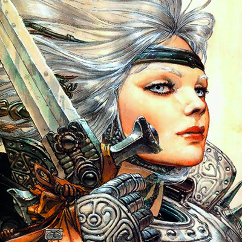
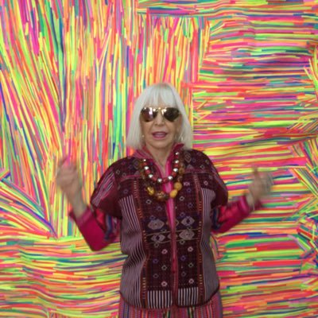
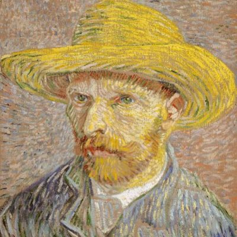

Arte

Juan Giménez
"Mi mayor pasión siempre fue el cine, y cuando descubrí la historieta era para mí un cine económico, un cine barato. Entonces ya prácticamente había decidido mi futuro."

Marta Minujín
El arte es salirse de lo establecido, es entrar en la eternidad y la trascendencia

Vincent Van Gogh
El famoso pintor Holandés nacido en 1852, fué un niño difícil, sensible y nervioso.